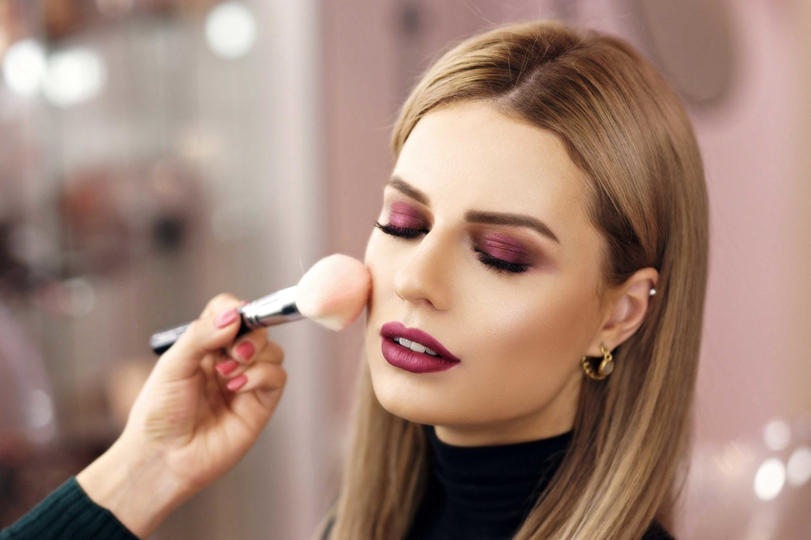
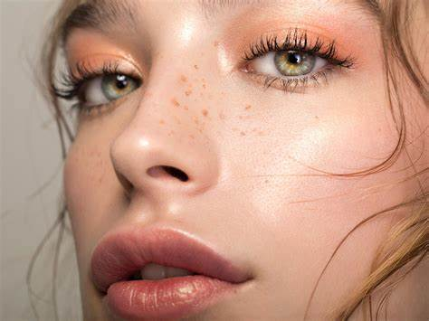
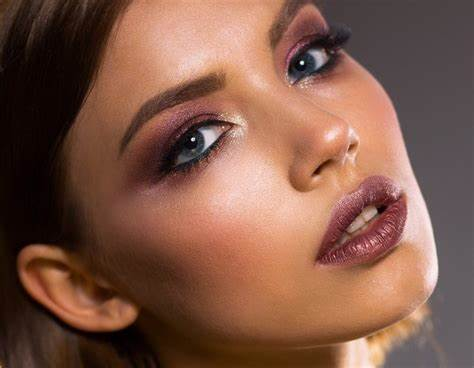

Makijaż wieczorowy
Makijaż wieczorowy to bardziej wyrazisty i elegancki styl, idealny na specjalne okazje. Charakteryzuje się mocniejszym podkreśleniem oczu i ust, co pozwala wyróżnić się podczas wieczornych wydarzeń i uroczystości.
Techniki makijażu wieczorowego
- Intensywne podkreślenie oczu (smokey eye) z użyciem ciemnych cieni i eyelinera
- Wyraziste konturowanie twarzy, które modeluje rysy
- Użycie rozświetlacza dla efektu glow na kościach policzkowych i łuku brwiowym
- Wyraziste usta w ciemniejszych kolorach, takich jak bordo czy czerwień
- Trwałe kosmetyki o wysokiej pigmentacji, które utrzymują się przez całą noc
Galeria makijażu wieczorowego


